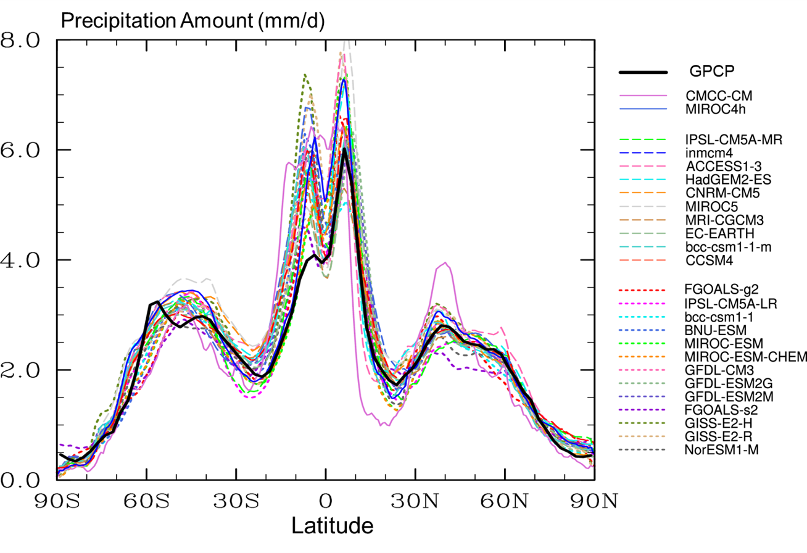
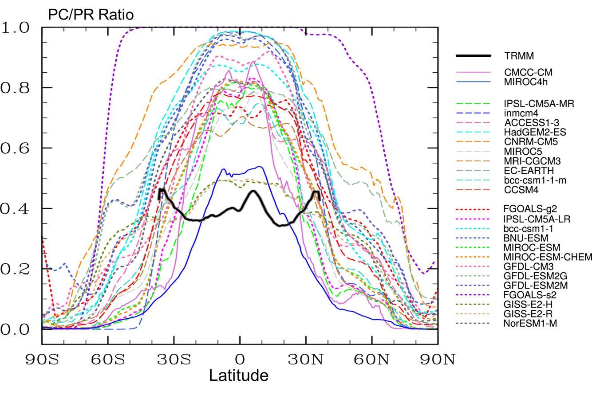
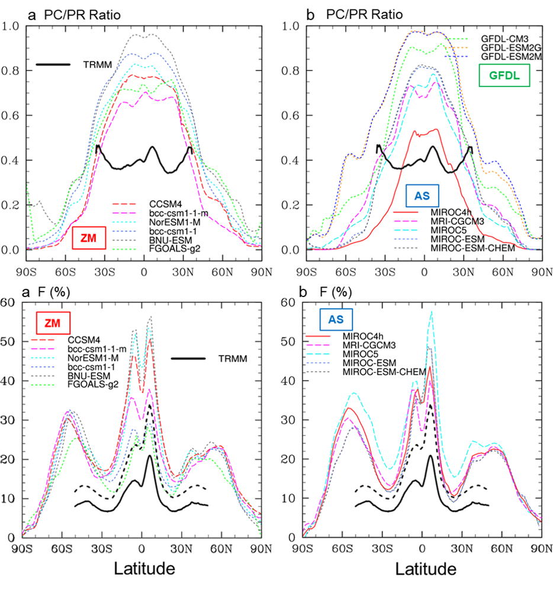

This ongoing work evaluates 25 CMIP5 models with 3-hourly outputs, evaluation of 3-hourly or hourly precipitation in CMIP6 models will also be conducted in the near future. Below are a few preliminary figures:
1 / 3

Precipitation amount (A) in 25 CMIP5 models and GPCP are overall comparable
2 3

Convective-to-total precipitation(PC/PR) ratios are much higher in 25 CMIP5 models than TRMM
3 / 3

Grouping 25 CMIP5 models by convective parameterizations
❮ ❯